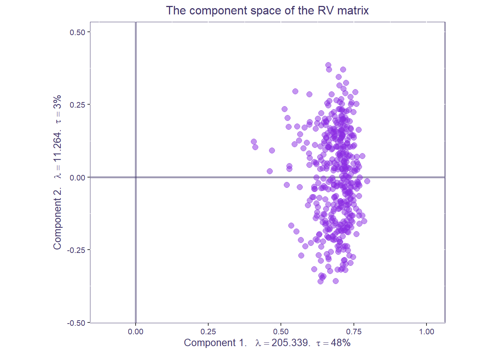
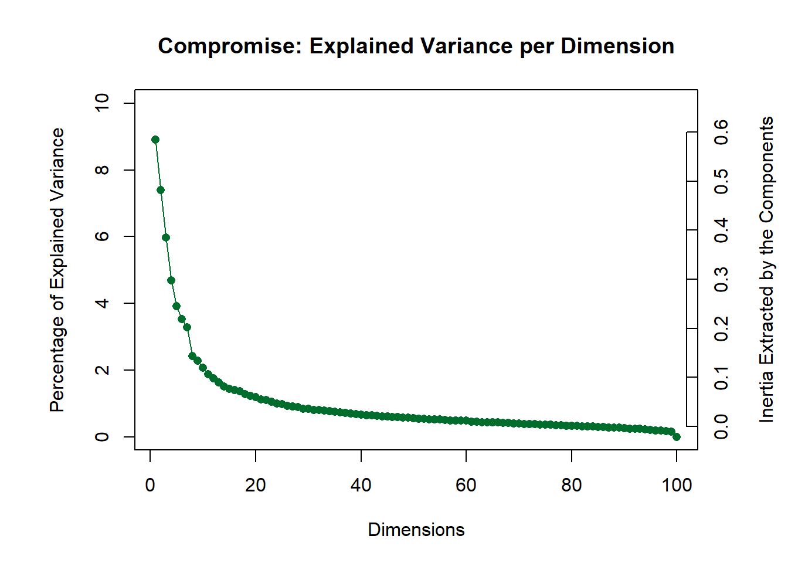
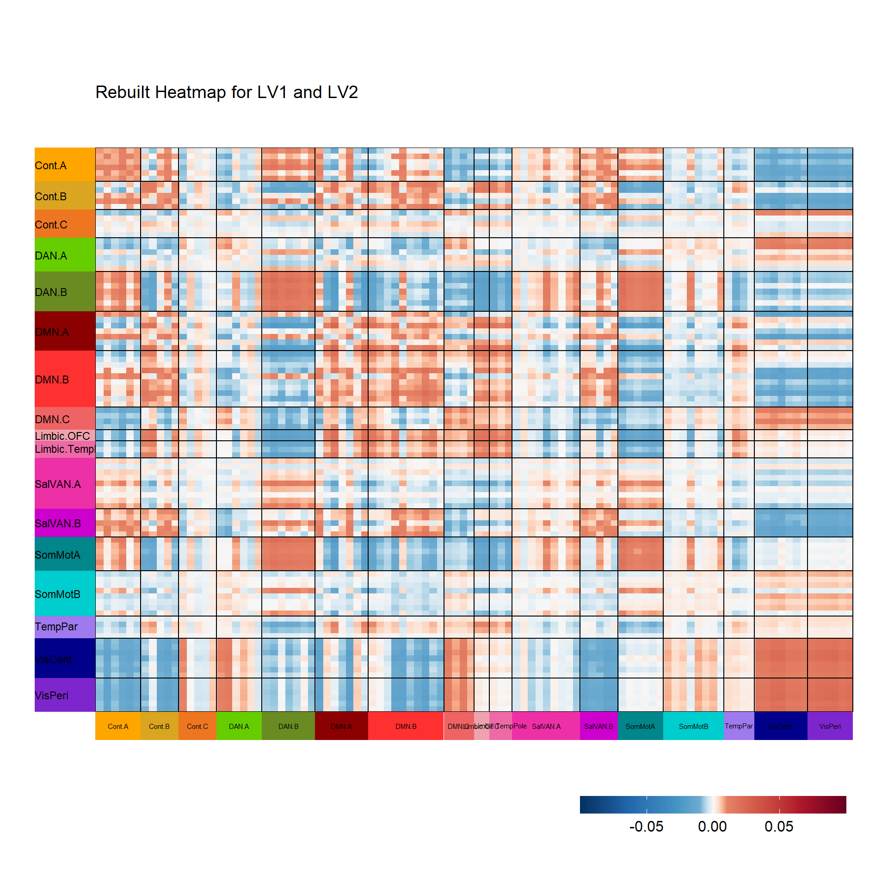
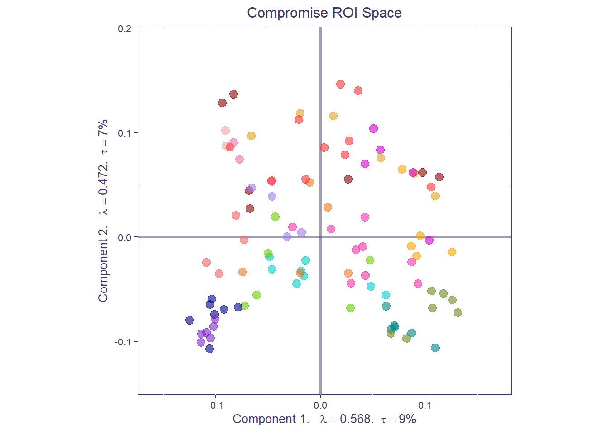
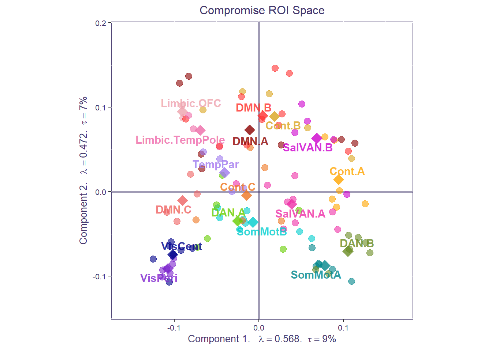
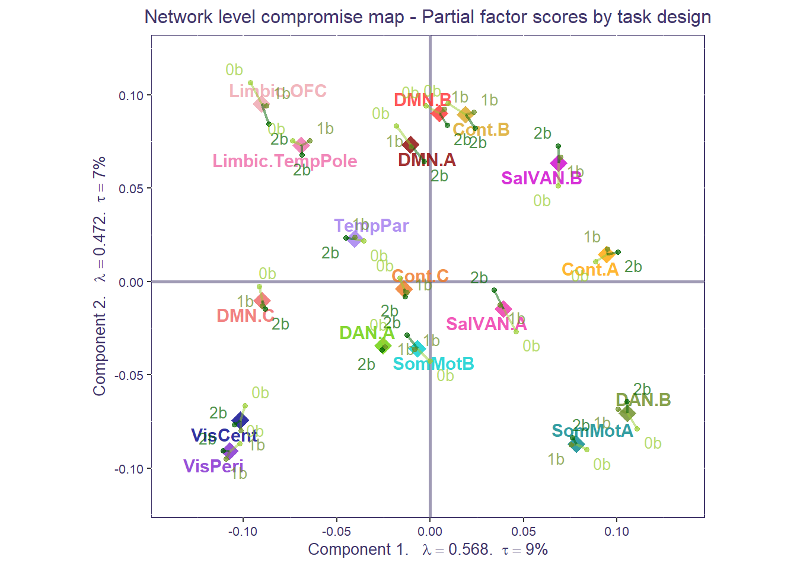

library(tidyr)
library(dplyr)
library(osfr)
library(readr)
library(devtools)
#devtools::install_github("HerveAbdi/DistatisR")
library(DistatisR) # covSTATIS analysis
library(PTCA4CATA) # factor map plotting
library(ExPosition) # makeDataNominal()
library(gplots) # heatmap.2()
library(sp) # convex hulls
library(ggplot2)
library(RColorBrewer)
#devtools::install_github("mychan24/superheat")
library(superheat)
## Theme
scatter.theme <- theme(axis.text = element_text(size = 8, color = "#42376B"),
axis.title = element_text(size = 10, color = "#42376B"),
title = element_text(size = 10, color = "#42376B"), plot.title = element_text(hjust = 0.5))Apply regular covSTATIS to task fMRI data
Setup
Data info
All data used in this tutorial are stored here. The “Data” repo contains: 144x3 functional connectivity text files (n=144, 3=task conditions, 0-,1-,2-back), a “participants_ages.csv” file with participants info and an atlas labels file “Schaefer_100parcel_17network_labels.csv”.
After standard preprocessing (see Rieck et al., 2021 Data in Brief), each individual’s voxel-time series were parcellated, for each task condition, using the standard 100 region-17 network Schaefer atlas (Schaefer et al., 2018 Cerebral Cortex). For each participant and condition, Pearson’s correlations were quantified between region pairs, to ultimately obtain 100x100x3 functional connectivity matrices for each individual.
Read in the data
The first step is to read in our connectivity matrices to form a 3D array (= ‘X’ here below) for analysis with covSTATIS. In this tutorial, the 3D array dimensionality is 100 x 100 x 144 x 3 (ROI x ROI x N x Task condition).
atlas_prefix <- "Schaefer100_17"
atlas_labels <- read_csv('../Data/Schaefer_100parcel_17network_labels.csv')
atlas_labels$Network <- as.factor(atlas_labels$Network)
demog_in <- read_csv('../Data/participant_ages.csv')
ids <- demog_in$subjectID
## Read in FC .txt files and reshape into 3D array with size n_roi x n_roi x n_sub*n_conditions (i.e. n_fns)
all_fns<-list.files(path = '../Data', pattern = paste0('^', atlas_prefix, '.*txt'), full.names = TRUE)
X_list<-lapply(X=all_fns, FUN=read_delim, delim="\t", col_names = F,col_type = list(.default = col_double()))
X <- array(unlist(X_list), c(dim(X_list[[1]]), length(X_list))) #our 3D array
rm(X_list)
## Label rows and columns with ROI label
if(length(grep("Schaefer", atlas_prefix)>0)){
rownames(X)<- atlas_labels$ROI_label
colnames(X)<- atlas_labels$ROI_label
}
## Label 3rd dimension with subject and task information (modified from filenames)
dimnames(X)[[3]]<-all_fns %>% gsub(pattern=".txt", replacement = "") %>%
gsub(pattern=paste0(atlas_prefix,"_"), replacement = "")Run covSTATIS
Now that we have created our 3D data array (X), we can run covSTATIS. We used the distatis function to do so. Since we are dealing with correlation values, the flag should be set to . The flag denotes the number of components we want to keep (the bigger the value, the slower the computations).
The function
In distatis, there are a few other arguments that the user may want to specify according to their research question and data:
Norm
Norm specifies how each individual data table is normalized before it is entered into distatis. By default, norm is set to "MFA", short for Multiple Factor Analysis by Pagès, Jérôme. MFA normalizes each table by its first singular value. This type of normalization ensures that data tables with larger variance do not dominate the first component of covSTATIS; in other words, every data table contributes the same amount of variance to the analysis.
Other options are "None" (no normalization step is taken), "SUMPCA" (each table is normalized by its total variance), and "NUCLEAR" (each table is normalized by its sum of singular values).
Our advice: We recommended people to use at least MFA or SUMPCA.
double-centering
double-centering centers the rows and columns of each table after the normalization has taken place, before running distatis. By default, double-centering is set to "TRUE" (i.e., each row/column will have a mean of 0). This step will ensure that the factor scores will have a mean of 0 for each dimension. When set to "FALSE", normalized (and not double-centered) data are input into distatis.
Our advice: We suggest users to take careful consideration regarding this argument, as double-centering could artifically alter results when 0s are biologically relevant. Specifically, in the case of functional connectivity, when both positive and negative correlation coefficients are analyzed, the 0s in each matrix, as well as the sign of each correlation value, are meaningful. In this case, double-centering will adjust the values, inducing an artificial sign flip (i.e., weak negative might become weak positive, or the other way around). To note: When running covSTATIS on non-centered matrices with both positive and negative values, one should interpret the relationship between ROIs in the compromise space based on the cosine of the angle they form with the origin (0 in the compromise components space). On the other hand, when only positive correlations are analyzed, double-centering will not change the data pattern. In this case, the double-centering procedure can improve the visualization of the compromise space (as the origin is at the center of all the ROIs) and the relationships between these ROIs can be interpreted based on their distance.
design
design allows users to specify the group structure of the matrices and ensures equal contribution of all groups when generating the weights to build the compromise. (Default is "NULL".)
Our advice: This is useful for some users that do group analyses and may be dealing with imbalanced groups (e.g., clinical vs healthy controls, with controls being larger in size). In this examplar case, specifying the
designargument will avoid the analysis being dominated by the larger group (e.g., the healthy controls) and therefore will place both groups on the same plane (i.e., contributing equally to the patterns).
There multiple arguments in this function, and we encourage users to choose
covstatis_res <- distatis(X,
Norm = "MFA", # default
Distance = FALSE,
double_centering = TRUE, # default
nfact2keep = 10,
design = NULL, # default
compact = FALSE)Step 1: \(R_V\) similarity matrix
The first operation covSTATIS computes is the generation of an \(R_V\) similarity matrix. The RV matrix quantifies the pairwise similarity among all data tables (squared Pearson’s correlation), irrespective of their rotation or scaling. The RV matrix then undergoes eigenvalue decomposition (EVD). The resulting first component best represents the common pattern across all tables, and its first eigenvector quantifies how similar each table is to this common pattern.
Let’s visualize the results of this EVD on the \(R_V\) matrix. The Scree plot shows how much variance is explained by each component/dimension. Ideally, there will be one strong component (as is the case with these data) indicating a strong coherence in the general network organization across all observations.
PlotScree(ev = covstatis_res$res4Cmat$eigValues,
title = "RV-map: Explained Variance per Dimension")
The factor map of the \(R_V\) space shows how similar the data tables are to each other.
rv.labels <- createxyLabels.gen(x_axis = 1,
y_axis = 2,
lambda = covstatis_res$res4Cmat$eigValues,
tau = covstatis_res$res4Cmat$tau,
axisName = "Component ")
## factor map
rv.map <- createFactorMap(covstatis_res$res4Cmat$G,
title = "The component space of the RV matrix",
col.background = NULL,
col.axes = "#42376B",
width.axes = 1,
alpha.axes = 0.5)
rv.map$zeMap_background + rv.map$zeMap_dots + rv.labels + scatter.theme
Step 2: Compromise space
Next, covSTATIS grabs the first eigenvector of this EVD on RV and scales it to sum to 1. The compromise matrix is built from the weighted sum of all data matrices and then also submitted to EVD. Let’s first visualize the compromise space/matrix.
net.col <- as.data.frame(unique(atlas_labels[,c(3,4)]))
rownames(net.col) <- net.col$Network
col.pal <- brewer.pal(11, "RdBu")
superheat(covstatis_res$res4Splus$Splus,
membership.cols = atlas_labels$Network,
membership.rows = atlas_labels$Network,
clustering.method = NULL,
heat.lim = c(-0.1,0.1),
heat.pal = rev(brewer.pal(11, "RdBu")),
heat.pal.values = c(0,0.45,0.5,0.55,1),
left.label.size = 0.08,
bottom.label.size = 0.05,
y.axis.reverse = TRUE,
left.label.col = net.col[levels(atlas_labels$Network),"Network_color"], # order by community name
bottom.label.col = net.col[levels(atlas_labels$Network), "Network_color"],
left.label.text.size = 3,
bottom.label.text.size = 2,
left.label.text.col = "black",
bottom.label.text.col = "black",
left.label.text.alignment = "left",
title = "The compromise")$plotTableGrob (7 x 4) "layout": 5 grobs
z cells name grob
1 1 (3-3,3-3) panel gTree[panel-1.gTree.105]
2 2 (6-6,3-3) layout gtable[layout]
3 3 (3-3,2-2) layout gtable[layout]
4 4 (4-4,3-3) layout gtable[layout]
5 5 (2-2,3-3) layout gtable[layout]Next, the compromise undergoes EVD. Let’s visualize its scree plot:
PlotScree(ev = covstatis_res$res4Splus$eigValues,
title = "Compromise: Explained Variance per Dimension")
Let’s now reconstruct a heatmap to explore the dimensions from the EVD on the compromise. Let’s start by visualizing the first two components (LV1, LV2).
covstatis_corrmat_lv1_lv2 <- tcrossprod(covstatis_res$res4Splus$F[,c(1,2)])
superheat(covstatis_corrmat_lv1_lv2,
membership.cols = atlas_labels$Network,
membership.rows = atlas_labels$Network,
clustering.method = NULL,
heat.lim = c(-0.1,0.1),
heat.pal = rev(brewer.pal(11, "RdBu")),
heat.pal.values = c(0,0.45,0.5,0.55,1),
left.label.size = 0.08,
bottom.label.size = 0.05,
y.axis.reverse = TRUE,
left.label.col = net.col[levels(atlas_labels$Network),"Network_color"], # order by community name
bottom.label.col = net.col[levels(atlas_labels$Network), "Network_color"],
left.label.text.size = 3,
bottom.label.text.size = 2,
left.label.text.col = "black",
bottom.label.text.col = "black",
left.label.text.alignment = "left",
title = "Rebuilt Heatmap for LV1 and LV2")$plot
TableGrob (7 x 4) "layout": 5 grobs
z cells name grob
1 1 (3-3,3-3) panel gTree[panel-1.gTree.310]
2 2 (6-6,3-3) layout gtable[layout]
3 3 (3-3,2-2) layout gtable[layout]
4 4 (4-4,3-3) layout gtable[layout]
5 5 (2-2,3-3) layout gtable[layout]Step 3: global factor scores from compromise space
The compromise space shows us how regional connectivity values relate to each other across all data tables (individuals and conditions). Each point in the compromise space represents a global factor score: a different ROI from our functional connectivity matrices, colored by their network membership. The closer points are, the stronger the functional connectivity across the entire dataset.
network_labels <- unique(atlas_labels$Network)
network_colors <- unique(atlas_labels$Network_color)
# Get labels for the compromise factor map
compromise_label <- createxyLabels.gen(x_axis = 1,
y_axis = 2,
lambda = covstatis_res$res4Splus$eigValues,
tau = covstatis_res$res4Splus$tau,
axisName = "Component ")
# To get graphs with axes 1 and 2:
h_axis <-1 # component to plot on x-axis
v_axis <-2 # component to plot on y-axis
compromise_graph_out <- createFactorMap(covstatis_res$res4Splus$F,
axis1 = h_axis, axis2 = v_axis,
title = 'Compromise ROI Space',
col.points = atlas_labels$Network_color,
alpha.points=.6, cex=3,
col.background = NULL, col.axes = "#42376B",width.axes = 1, alpha.axes = 0.5)
print(compromise_graph_out$zeMap_background + compromise_graph_out$zeMap_dots + scatter.theme + compromise_label)
We can also compute the average of all the ROIs (i.e., barycenter) for each a priori network to get a coarser network compromise map.
network_mean_F <- t(apply(makeNominalData(as.matrix(atlas_labels$Network)),2,function(x){x/sum(x)})) %*% covstatis_res$res4Splus$F
row.names(network_mean_F) <- network_labels
compromise_network_graph_out <- createFactorMap(network_mean_F,
axis1 = h_axis,axis2 = v_axis,
title = "Compromise map for network-level barycenters",
col.points = network_colors, col.labels = network_colors,
alpha.points=.8, cex=5, text.cex=4, alpha.labels=.8, pch=18,
col.background = NULL, col.axes = "#42376B",width.axes = 1, alpha.axes = 0.5)
print(compromise_network_graph_out$zeMap + compromise_network_graph_out$zeMap_dots + scatter.theme + compromise_label)Both the ROI-level and network-level factor maps can be overlaid to show how individuals ROIs cluster around their respective networks, for the whole sample.
print(compromise_graph_out$zeMap_background + compromise_graph_out$zeMap_dots +
compromise_network_graph_out$zeMap_dots + compromise_network_graph_out$zeMap_text + scatter.theme + compromise_label)
Step 4: partial factor scores from compromise space
Using partial projection, we can now project each condition back onto the compromise space (i.e., partial factor scores) to understand how each correlation matrix fits in the compromise (or sample-level) space.
To do that, we should first create a design matrix specifying which slice in our X cube corresponds to which n-back condition:
condition_design <- vector("character",dim(X)[3])
condition_design[grep("*_nbk_0b",dimnames(X)[[3]])]<-"0b"
condition_design[grep("*_nbk_1b",dimnames(X)[[3]])]<-"1b"
condition_design[grep("*_nbk_2b",dimnames(X)[[3]])]<-"2b"Now we can compute and plot the partial maps for the different n-back conditions, for each ROI. This plot shows how much the connectivity for each ROI is similar/different across task conditions (closer to the ROI center: more similar; farther from ROI center: more different).
#Compute the Partial map
F_j <- covstatis_res$res4Splus$PartialF
alpha_j <- covstatis_res$res4Cmat$alpha
# create the groups based on design
code4Groups <- unique(condition_design)
nK <- length(code4Groups)
# initialize F_K and alpha_k
F_k <- array(0, dim = c(dim(F_j)[[1]], dim(F_j)[[2]],nK))
dimnames(F_k) <- list(dimnames(F_j)[[1]],
dimnames(F_j)[[2]], code4Groups)
alpha_k <- rep(0, nK)
names(alpha_k) <- code4Groups
Fa_j <- F_j
for (j in 1:dim(F_j)[[3]]){ Fa_j[,,j] <- F_j[,,j] * alpha_j[j] }
for (k in 1:nK){
lindex <- condition_design == code4Groups[k]
alpha_k[k] <- sum(alpha_j[lindex])
F_k[,,k] <- (1/alpha_k[k])*apply(Fa_j[,,lindex],c(1,2),sum)
}
compromise_pfs <- createPartialFactorScoresMap(
factorScores = covstatis_res$res4Splus$F,
partialFactorScores = F_k,
axis1 = 1, axis2 = 2,
colors4Items = as.vector(atlas_labels$Network_color),
colors4Blocks = c("yellowgreen", "olivedrab", "darkgreen"),
names4Partial = dimnames(F_k)[[3]], #
shape.points = 20)
print(compromise_graph_out$zeMap_background + compromise_graph_out$zeMap_dots +
compromise_pfs$mapColByBlocks + ggtitle('Compromise map - Partial factor scores by task design') + scatter.theme + compromise_label)That’s a very busy plot! Let’s clean it up to make things easier to interpret. We can compute the partial factor scores by the mean network compromise. Similar to our ROI plot, for each network, the more spread out the conditions are from the network mean, the more diverse the functional connectivity is across task conditions. Tip: if you have groups, sometimes it is helpful to separate partial factor scores per group and plot them individually (e.g., you may not be able to see a difference if everything is plotted together).
F_k_network<-array(NA, dim=c(length(network_labels), dim(F_k)[2], dim(F_k)[3]))
dimnames(F_k_network)<-list(network_labels, dimnames(F_k)[[2]], dimnames(F_k)[[3]])
for(i in 1:dim(F_k_network)[3]){
F_k_network[,,i]<- t(apply(makeNominalData(as.matrix(atlas_labels$Network)),2,function(x){x/sum(x)})) %*% F_k[,,i]
}
compromise_pfs_network <- createPartialFactorScoresMap(
factorScores = network_mean_F,
partialFactorScores = F_k_network,
axis1 = 1, axis2 = 2,
colors4Items = network_colors,
colors4Blocks = c("yellowgreen", "olivedrab", "darkgreen"),
names4Partial = dimnames(F_k_network)[[3]], #
size.labels=3.5, size.points = 2,shape.points=20)
print(compromise_network_graph_out$zeMap + compromise_pfs_network$mapColByBlocks + ggtitle('Network level compromise map - Partial factor scores by task design') + scatter.theme + compromise_label)
Step 5: area of the convex hull
We can now compute the area of the convex hull around the partial factor scores for each individual at the network-level (NB: this can be done at the regional level too). Area of the hull scores can be seen as “task condition differentiation scores”: the larger the area of the hull, the more diverse the network functional connectivity is across task conditions (more distant from mean); the smaller the area of the hull, the more homogenous the functional connectivity across 0-,1-, and 2-back. Note: area of the hull values are arbitrary so you can go ahead and normalize them. Make sure you have at least 4 points to build the area of the hull (here you’ll see warnings cause some networks have less than 4 observations/ROIs).
## Create empty matrix to put results in, should be # participants (rows) by # networks (columns)
task_diff_network_level <-data.frame(matrix(0, length(ids),length(network_labels)))
rownames(task_diff_network_level) <- ids
names(task_diff_network_level) <- network_labels
partialF <- covstatis_res$res4Splu$PartialF
for(i in 1:length(ids)){
### Grab all the partialF values associated with this subject for LV1
this_lv1 <- partialF[,1,grep(paste0(ids[i], "_*"),dimnames(partialF)[[3]])]
## Transform the node-level partialF to network-level partialF for LV1
this_lv1_network<-t(apply(makeNominalData(as.matrix(atlas_labels$Network)),2,
function(x){x/sum(x)})) %*% as.matrix(this_lv1)
### Grab all the partialF values associated with this P for LV2
this_lv2 <- partialF[,2,grep(paste0(ids[i], "_*"),dimnames(partialF)[[3]])]
## Transform the node-level partialF to network-level partialF for LV2
this_lv2_network<-t(apply(makeNominalData(as.matrix(atlas_labels$Network)),2,
function(x){x/sum(x)})) %*% as.matrix(this_lv2)
## Loop through each network, get the LV1 and LV2 points, and compute the area of the hull around the points
for(n in 1:length(network_labels)){
hull_pts <- chull(this_lv1_network[n,], this_lv2_network[n,]) #here you can play with the flag "percentage" and include either all points (like done here) or e.g., 95% of them in which case you'd write "percentage=0.95"
this_hull_coords <- cbind(this_lv1_network[n,hull_pts],this_lv2_network[n,hull_pts] )
this_poly_area <- Polygon(this_hull_coords, hole=F)@area
task_diff_network_level[i,n] <- this_poly_area
}
}
#print(task_diff_network_level) #you can go ahead and save this output and relate it to e.g., behaviorArea of the hull scores can be used in secondary analyses, such as brain-behavior correlation. Since our sample is an adult lifespan sample, we can relate area of the hull scores to age. This plot shows how Default A functional connectivity becomes more homogeneous/less differentiated across tasks as a function of age.
secondary_analyses <- cbind(demog_in$Age, task_diff_network_level)
secondary_analyses <- as.data.frame(secondary_analyses)
colnames(secondary_analyses)[1] <- "Age"
colnames(secondary_analyses)[14] <- "DefaultA"
ggplot(secondary_analyses, aes(x=Age, y=DefaultA)) +
geom_point()+
geom_smooth(method=lm)